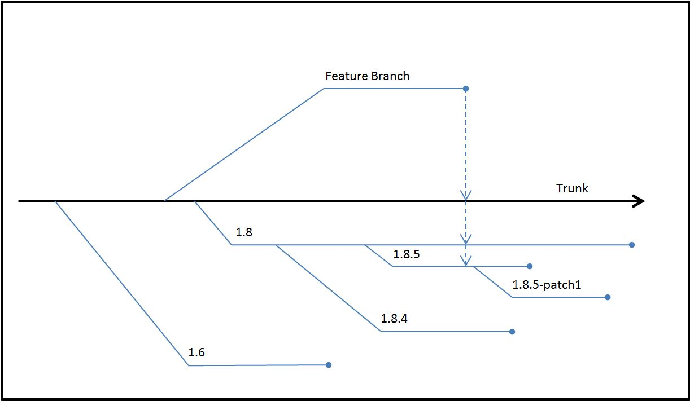

HDF5 software is updated on a regular basis. These updates, known as releases, range in scope and size from small to large. Some updates may only fix bugs, and some updates may require a change in the format of the data file. The version numbers that are applied to updates give information about the kinds of changes made in the updates. This Tech Note describes what the version numbers mean.
Each software release of the HDF5 Library is identified with a version number. The version number is a set of three integers written as HDF5-1.2.3, HDF5 version 1.2 release 3, or HDF5 Release 1.2.3.
The ‘5’ in ‘HDF5” is part of the library name and will not change during the lifetime of the project.
The first integer in a version number is the major version number and changes when there is an extensive change to the file format or library API. Such a change will likely require files to be translated and applications to be modified. This number is not expected to change: so far, all HDF5 software has had a major version number of 1. Since this number has not changed and is not expected to change, it may be dropped at some point.
The second integer, 2 in the examples above, is the minor version number. This number is incremented when there are new features that require a change in the file format. For example, a change in file format was required during the change from version 1.6 to version 1.8. Stable released versions of the library are given even minor version numbers such as 1.6 and 1.8 while odd minor version numbers such as 1.7 and 1.9 are reserved for the development trunk. See the figure below for examples.
The third integer, 3 in the examples above, is the release number. A change in this number indicates that the library has been updated. The updates might include bug fixes, performance improvements, and new features that do not require a file format change.
The HDF Group uses a revision control system to manage changes to the HDF5 project. Within the revision control system, a trunk and branch system is used to identify and track software versions. The version numbers described above identify where a given piece of software was produced in the system. The figure below shows the general scheme.
|  |
|
Figure 1. The trunk, release branches, and feature branches |
The Trunk is the center of the system and used to be known as the Development Branch. Since new work is done in feature branches, the Development Branch is now known as the Trunk. The minor version number of the Trunk is always an odd number. Currently, the Trunk is version 1.9. The Trunk was version 1.7 from the time the 1.6 branch was released until the 1.8 branch was released.
Projects that add new features, bug fixes, and performance improvements are developed on feature branches. When a project is completed, its feature branch is merged into the Trunk. In the figure above, the merging of a feature branch is represented by a dashed arrow from the Feature Branch to the Trunk. If a feature requires a file format change, then the feature will stay in the Trunk until the next significant release. This would mean in the figure above that the new feature would be released in a future 1.10 release branch. If a feature does not require a file format change, then it might be merged into one or more release branches. This would mean in the figure above that the new feature could be merged into the 1.8 branch and could be included in the 1.8.6 release. If the feature was added to the 1.8.5 branch, then a patch version might be released.
Release branches hold software that is distributed to general users. In the figure above, a few release branches are shown below the Trunk. Work is done in release branches for a period of time. Branches further from the Trunk have less work done in them. For example, a patch branch such as 1.8.5-patch1 may contain only one or two changes. A release branch such as 1.8.5 may contain a number of bug fixes and new functions, but these changes are small in number compared to the number of changes in the 1.8 branch.
We aim to make available to the public two maintenance releases a year. The releases occur usually in the spring near May 15 and in the fall near November 15. If two release branches are being maintained, then maintenance releases will be made for each release branch. For example, there was a time when both the 1.6 and 1.8 branches were actively maintained. In one maintenance release, 1.6.10 and 1.8.4 were released at the same time. The 1.6 and 1.8 branches were both actively maintained to give “early” adopters access to new features and to give most users plenty of time to make the change to 1.8 software from 1.6.
As we improve any branch, we consider the effect of any change on the readability of objects. Applications built, for example, with version 1.8.5 will be able to read data files written with any prior version of the library. So, a 1.8.5 application will be able to read a dataset written with 1.4.5. A 1.8.5 application may be able to read a dataset written under the 1.8.7 library if no new features, features not known to 1.8.5, were used. For more information, see the discussion of backward and forward compatibility in the FAQ at www.hdfgroup.org/HDF5/faq/bkfwd-compat.html.
A snapshot is an intermediate release of the software in a branch or in the Trunk. Snapshots are made available so that users may begin to test some change in the software that affects their software. The changes may range from bug fixes to new features. Snapshots are made and released regularly. How regularly depends on whether or not the software passes the tests done on each build. For the available snapshots, see the Downloads page at www.hdfgroup.or/downloads.
The library provides macros and functions to query and check version numbers.
The following constants are defined in H5public.h and determine the version of the include files.
H5_VERS_MAJORH5_VERS_MINORH5_VERS_RELEASEH5_VERS_SUBRELEASEH5_VERS_INFOThe table below describes some of the function calls and macros that can be used to query and check version numbers.
| Table 1. Version function calls and macros | |
|
Function Call or Macro |
Comments |
H5get_libversion |
This function returns through its arguments the version numbers for the library to which the application is linked. |
H5check |
This macro uses the
|
H5check_version |
This function is called by the
H5check macro with the include file version constants.
The function compares its arguments to the result returned by
H5get_libversion. If a mismatch is detected, it prints
an error message on the standard error stream and aborts.
The behavior of this function can be modified by the HDF5_DISABLE_VERSION_CHECK environment variable. Setting
the environment variable to a value of ‘1’ will issue a warning,
but continue without aborting. Setting the environment variable
to a value of ‘2’ will suppress the warning, silently
continuing without aborting. |
H5_VERSION_GE and
H5_VERSION_LE |
These macros compare the version of the HDF5 library being used against the version number specified in the parameters. At compile time, they can be used to conditionally include or exclude code based on the library’s version. |
H5Pset_libver_bounds |
This function can be used to control the versions of the object formats that will be used when creating objects in a file. |
For more information on these and other function calls and macros, see the HDF5 Reference Manual.
The purpose of this section is to describe how some of the version functions, macros, and constants might be used.
Suppose first that a developer builds an application that will read
from and write to an HDF5 file. When the application is compiled, a
version of the HDF5 Library such as 1.8.6 will be used. The version
constants (H5_VERS_MAJOR, H5_VERS_MINOR,
and H5_VERS_RELEASE) are included in the application
when it is compiled.
Suppose next that a user gets a copy of the application and starts
it up on a workstation. The executable is put into memory along with
the HDF5 Library. However, an application will only work successfully
with the version of the library with which the application was
compiled. In other words, the version of the library that is loaded
when the application is started must be the same version as the
version of the library with which the application was compiled. This
is verified by the HDF5 library when the first HDF5 API routine is
called. If an application wanted to confirm early in its startup
procedure that the version of the library that will be loaded into
memory at the workstation would work with the application, then it
could use the H5get_libversion and H5check_version
function calls.
The H5_VERSION_GE and H5_VERSION_LE
version macros compare the version of the HDF5 library being used
against the version number specified in the parameters. At compile
time, they can be used to conditionally include or exclude code based
on the library’s version. For example, the link functions, H5Lxxx,
are new in version 1.8, and some group functions, H5Gxxx,
are deprecated in 1.8. With the H5_VERSION_GE macro,
an application could use H5Ldelete if the library version
is 1.8.0 or greater, or it could use H5Gunlink if the
library version is not greater than 1.8.0.
H5Pset_libver_boundsSuppose a data file has three datasets. It is possible that the
three datasets were added to the data file with applications using
different versions of HDF5. The different versions could be 1.4.5,
1.6.10, and 1.8.6. If another dataset is written to the data file,
then it will be written in the oldest format possible that has all
of the features needed to successfully write the dataset. If a newer
feature such as compact storage, a new parameter for a function, or
a partially compressed dataset is used, then a newer format will be
used. H5Pset_libver_bounds could be used to specify the
oldest format used. In the situation above, the owners of the data
file might want all data written to the file in the future to be in a
1.8 format rather than 1.6 or 1.4.
THG Help Desk: 'help' at hdfgroup.org Last modified: 30 October 1998 Last modified: 27 March 2007 (Help Desk contact only) Last modified: 19 April 2011